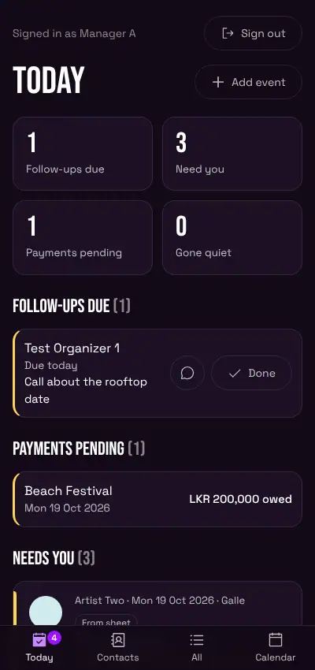
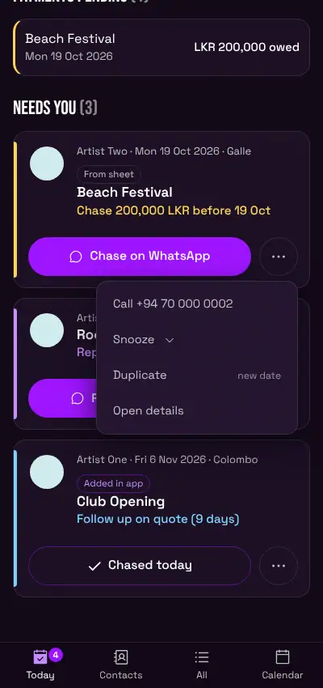
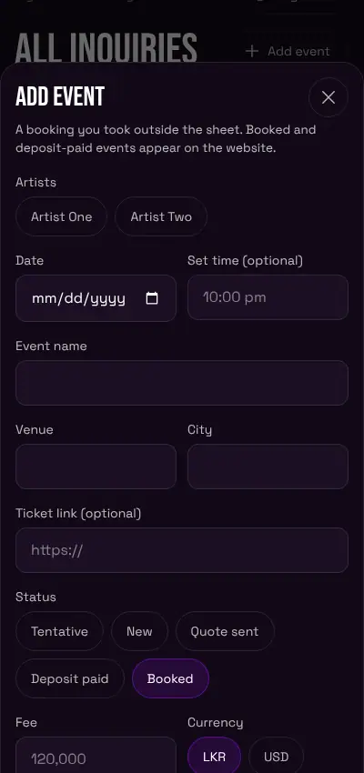
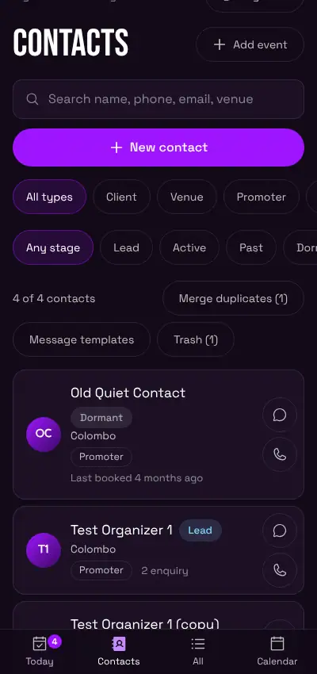
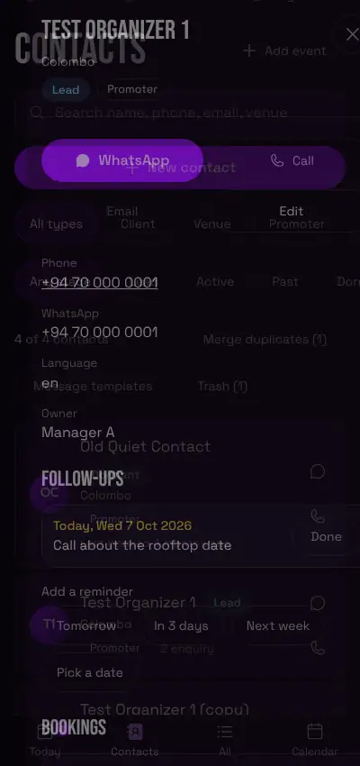
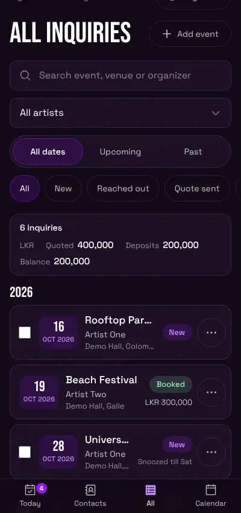
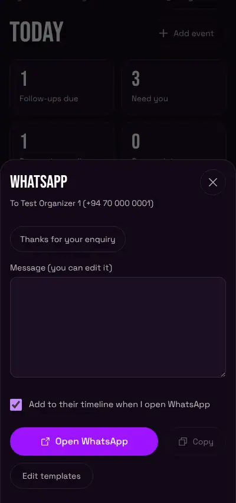

For Kasuni and Nirbheeth. Plain and simple. Every step here matches what the app does today.
The pictures use made-up names and numbers. Your screen will show your real bookings.
QUICK CARD (read this first)
What this app is. One place for your artists' booking enquiries. It tells you who to reply to, who owes money, and who to call back. You see your own artists' events. Anuda (the owner) sees everything.
How to sign in.
- Open the FLOST8 site and go to the page called /manage.
- Tap Continue with Google.
- Pick your Google account.
If you see NO ACCESS YET, that Google account is not on the list. Ask Anuda to add your email.
The 5 things you do every day.
- Open Today. It is your first screen.
- Tap Done on any Follow-ups due that you finished.
- Clear Needs you: tap the big button on each card (WhatsApp, or Chased today).
- After a call, open the contact and write a note under LOG A TOUCH. Set a reminder if you need one.
- Tap Add event when you get a new booking.

Three things to know.
- Most taps can be undone for 5 seconds. Look for Undo at the bottom.
- Rows marked From sheet come from your Google Sheet. Change them in the sheet, not here.
- The app never sends a WhatsApp message by itself. It opens WhatsApp and you press send.
1. Sign in and move around
What it is for. Get in, and know where things are.
What to tap.
- Go to /manage. Tap Continue with Google.
- Choose your account.
What you will see. The Today screen.
- On a laptop the menu is on the left: Today, Contacts, All inquiries, Calendar.
- On a phone it is the bar at the bottom: Today, Contacts, All, Calendar.
- Add event and Sign out are on the left (laptop) or at the top (phone).
- The app remembers the page you were on and your filters, on that device.
If it goes wrong.
- NO ACCESS YET: your email is not on the list. Ask Anuda.
- Loading that never ends: check your internet and refresh.
2. The Today screen
What it is for. Everything you should do today, in one place.
What to tap. Tap Today.
What you will see.
- Four number boxes: Follow-ups due, Need you, Payments pending, Gone quiet.
- FOLLOW-UPS DUE: reminders due today or late. Tap Done when finished. The chat button opens WhatsApp.
- PAYMENTS PENDING: shows with money still owed. Tap one to open it.
- NEEDS YOU: events that wait for you (see section 3).
- GONE QUIET: people who booked before and have not been in touch for over 90 days. Tap the chat button to message them.
If everything is done you will see All clear. Nothing is due today.
If it goes wrong. If you see Contacts could not be loaded, so the lists below may look empty., tap Try again.
3. Needs you, and the next-step buttons
What it is for. The app tells you what to do next on each event.
What to tap. Look at NEEDS YOU on Today.
What you will see. One card per event. Each card has one line that says what to do:
- Reply to someone: the event is New and has had no touch for more than 24 hours.
- Follow up on quote: the status is Quote sent and nothing has happened for more than 5 days.
- Chase money: the show is Booked or Deposit paid, it is within 14 days, and money is still owed.
Then one big button:
- Reply on WhatsApp or Chase on WhatsApp: opens the WhatsApp window with ready messages (see section 8).
- Chased today: tap it after you followed up on a quote. The card goes away.
The three dots button has more. You only see the ones that fit that card: Call, Chased today, Mark reached out, Mark paid, Set status, Snooze, Duplicate, Open details.

Every action can be undone for 5 seconds. Tap Undo at the bottom.
A Tentative date never shows here. Past dates never show here. A card leaves the list when you act on it (a comment, a status change, or a button above).
If it goes wrong. You can view this but not change it means that event is not yours, or it is a sheet row.
4. Add an event
What it is for. Put a booking you took yourself into the app.
What to tap.
- Tap Add event. (On a laptop you can press N.)
- Tap your artist.
- Pick the Date.
- Type an Event name or a Venue. You need at least one.
- Check the Status. It starts as Booked.
- In Organizer, start typing the name. Tap the match in the list. The phone, email, city and more fill in. (Or tap Add "name" as a new contact.)
- Tap Add event.

What you will see. The new event opens. It says Will be added to your list. Events with the status Booked or Deposit paid are also sent to the website's Upcoming Shows list.
You can also fill Set time, City, Ticket link, Fee and Currency.
If it goes wrong.
- Pick at least one artist. Tap an artist.
- Pick the event date. Fill the date.
- Add an event name or a venue. Type one.
- Saved, but the website list was not updated. Your event is saved. Tap Retry on the message. If it keeps happening, tell Anuda.
Add from the Calendar. Open Calendar. Tap a day. Tap Add event on that date. The date is already filled in.
5. Contacts
What it is for. Keep every organizer and venue person in one place.
What to tap. Tap Contacts.

What you will see.
- A search box (name, phone, email, venue).
- Filters: All types, Client, Venue, Promoter, Artist, Supplier, Sponsor. And Any stage, Lead, Active, Past, Dormant. And Only mine.
- New contact button.
- Each row has a WhatsApp and a Call button.
You can see every contact. For each contact you only see the bookings you are allowed to open.
Add a contact. Tap New contact. Fill in the form. Save.
Merge two entries for the same person. In Contacts, tap Merge duplicates. Tap Review and merge on a pair. Pick the one to keep. Tap Merge. For 20 seconds you can tap Undo. Later, open the kept contact, tap Show change history, then Undo this merge.
Delete a contact. Open it and tap Move to Trash. Nothing is erased on its own. After 30 days old ones can be cleared out for good, so restore it before then if you want it back. Get it back with Contacts, then Trash, then Restore.
If it goes wrong. If you see Contacts could not be loaded, so the lists below may look empty., tap Try again.
6. Notes, call log and reminders
What it is for. Remember what was said, and when to call back.
What to tap.
- Open a contact (tap the name).
- Under LOG A TOUCH, pick Call, WhatsApp, Note, Meeting or Email.
- Type what was said in What was said.
- Optional: under Remind me, pick Tomorrow, In 3 days, Next week or Pick a date.
- Tap Save.

What you will see. The note shows under TIMELINE with your name and the time. If you set a reminder, it shows under FOLLOW-UPS. You can Delete your own notes.
Reminder only. Under FOLLOW-UPS, pick a day, type what to follow up on, and tap Set reminder.
When it is due. It shows in FOLLOW-UPS DUE on Today. Late ones are red. Tap Done when finished.
If it goes wrong. Save stays grey until you type something.
7. All inquiries and filters
What it is for. Find any of your events.
What to tap. Tap All inquiries.
What you will see. A list of your artists' events, split by year. The bar at the top shows how many, and the money totals you may see.
Filters: the search box, the artist drop-down, All dates / Upcoming / Past, and status buttons: All, New, Reached out, Quote sent, Tentative, Deposit paid, Booked, Lost, Spam.

If it goes wrong. Nothing matches these filters. Tap Show everyone's inquiries, or loosen the filters.
8. WhatsApp templates
What it is for. Send a ready-made message in a few taps.
What to tap.
- Tap the WhatsApp button on a contact or on a card.
- Pick a language if there is more than one.
- Tap a template. The message fills in with the name, date and venue.
- Change the words if you like.
- Tap Open WhatsApp. WhatsApp opens with the message typed. Press send there.

You can also tap Copy. If Add to their timeline when I open WhatsApp is ticked, the app writes a note on the contact.
Make or change templates. In Contacts, tap Message templates. Tap New template. Give it a title, a language and a message. You can type {name}, {date}, {venue}, {event} and {me}. They fill in by themselves. Archive hides one. Restore brings it back. Everyone shares the same templates.
If it goes wrong. There is no usable phone number yet means the contact has no usable number. Add one.
9. Snooze
What it is for. Hide a card from Needs you until you want to see it again.
What to tap.
- Tap the three dots on the card or row.
- Tap Snooze.
- Tap Tomorrow, Friday, or Pick a date.
What you will see. The card goes away. In All inquiries the row says Snoozed till that day. On that day it comes back by itself. You get 5 seconds to Undo.
To bring it back early: three dots, then Unsnooze.
Anuda can still see what you snoozed, in a dim colour.
If it goes wrong. If you get Something went wrong, tell Anuda. One update may still be waiting to be switched on.
10. Duplicate an event
What it is for. Make a new event that is like an old one.
What to tap.
- Tap the three dots on the row.
- Tap Duplicate.
- Pick the new Date.
- Tap Add event.
The Add event window opens already filled in. It copies your artists, name, venue, city, set time, fee, currency and organizer. It does not copy the date or the ticket link.
11. Bulk actions
What it is for. Close many events at once.
What to tap.
- Open All inquiries.
- Tick the small box at the left of each row.
- Tap Mark lost or Mark spam in the bar at the bottom.
What you will see. The bar says how many you ticked. You get 5 seconds to Undo. Then a message says what happened, for example 7 of 8 updated, 1 not allowed. Tap Clear to untick everything.
Which rows can you tick? Only rows that came from the website or that you added in the app, and that are yours. Rows marked From sheet have no box.
If it goes wrong. 1 not allowed means one row is not yours. The others still changed.
12. Change a status
What it is for. Move an event forward, or close it.
Way one. Tap the three dots on the row, tap Set status, tap the new status. You get 5 seconds to Undo.
Way two. Open the event. Tap a status button. A Tentative event also has Confirm booking.
You cannot change the status of a From sheet row. Change it in the sheet.
13. What you cannot see or do
- You cannot see other managers' bookings. You see your own artists' events.
- You cannot see money for events that are not yours. You will see Money details are private to the artist's manager.
- You cannot edit, delete or bulk change a From sheet row.
- You cannot change an event that belongs to another manager. You can open it and read it.
- You cannot delete events you did not add in the app.
- Only Anuda can release an event that is held back from the website.
- Only Anuda sees the team buttons, Resync website and Nudge.
What you can do with a sheet row: open it, read it, call or WhatsApp the organizer, add a comment, link a contact, snooze it, and tap Edit in sheet to open your sheet. The app copies your sheet every 15 minutes.
14. Keyboard shortcuts (laptop)
| Key | What it does |
|---|---|
| / | Jumps to the search box (on All inquiries and Calendar) |
| N | Opens Add event |
| Up and Down arrows | Move from row to row |
| Enter | Opens the row you are on |
| Esc | Closes a window or a menu |
They do not work while you are typing in a box, or while a menu or window is open. If an arrow key does nothing, click on an empty part of the page first.
Troubleshooting
- NO ACCESS YET. That Google account is not on the list. Ask Anuda.
- You can view this but not change it. It is a sheet row, or it belongs to someone else. This also shows as not allowed after a bulk action.
- Not allowed (in a bulk message). That row is not yours. The rest were done.
- Saved, but the website list was not updated. Your event is safe. Tap Retry. If it keeps failing, tell Anuda.
- Could not reach the server. Check your internet and try again. Check your internet. Try again.
- Something went wrong. Please try again. Try again. If it keeps happening, tell Anuda.
- A row is missing. Check the filters. It may be snoozed, or marked Lost or Spam.
- No WhatsApp button on a contact. The contact has no usable phone number.
- I tapped by mistake. Tap Undo within 5 seconds.
Glossary
- Needs you. The list of events that wait for you: a reply, a quote follow-up, or money.
- Team follow-ups. What Anuda sees instead of Needs you. It shows everyone's.
- Sheet row. An event copied in from your Google Sheet. It has a From sheet tag.
- Snooze. Hide a card until a day you pick.
- Hold back. Keep an event off the website. Only Anuda can release it.
- Trash. Where deleted contacts wait. You can restore them. They can be cleared out for good after 30 days.
- Merge. Join two entries for the same person into one contact.
- Gone quiet. A person who booked before and has not been in touch for over 90 days.